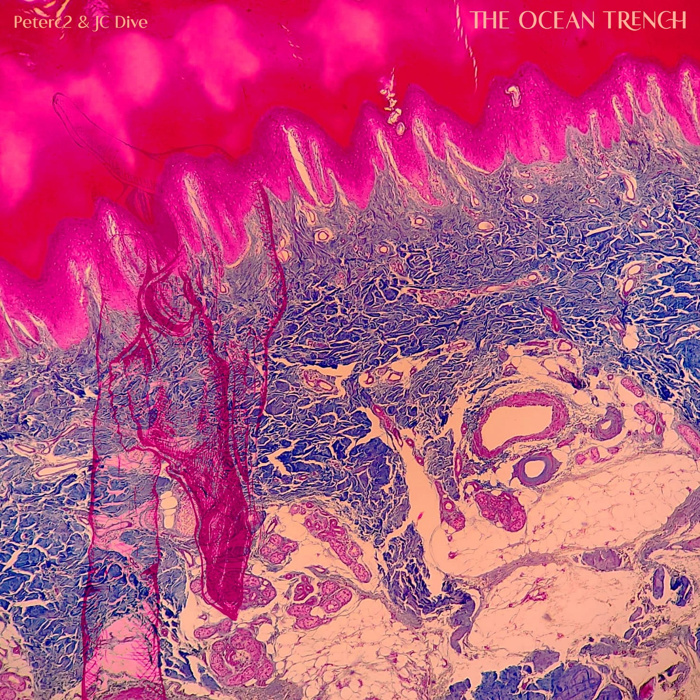

The Ocean Trench

Album colaborativo Peterc2 JC Dive
01 - The Ocean Trench
02 - Golden Trick
03 - Cleaning
04 - Birds and Seeds
05 - Canto do Silêncio
06 - How Bad Is It
07 - I Will Cut Into You
08 - On The House
09 - Lilly
10 - Not Bad at All
11 - My View Is Bad
12 - Possession
13 - Littering
14 - The Night Shifts X Radio Report
15 - Slow Attack
16 - Understone
17 - Your Skull Is Warm and Soft
18 - Our King
19 - Noname 2
20 - Return To The Shed
21 - Corner Van
10/04/2026